السلسلة 53
السيارة (صنف B) · 40 سؤال. كل سؤال فيه الصورة والصوت. اختار الجواب (ولا جوج إلا كانو صحاح)، ورك على «تأكيد» باش تشوف واش صبتي.
- 40سؤال
- 32باش تنجح
- 1 – 4جواب واحد ولا أكثر
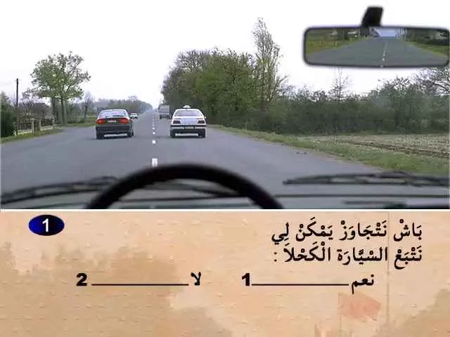
الكلافيي: 1–4 للجواب، Enter للتأكيد وللسؤال الجاي.
السلسلة 53 · النتيجة ديالك
0 / 40
السلسلة 53
السيارة (صنف B) · 40 سؤال، بالصوت، مع الجواب الصحيح والشرح.
السؤال 1
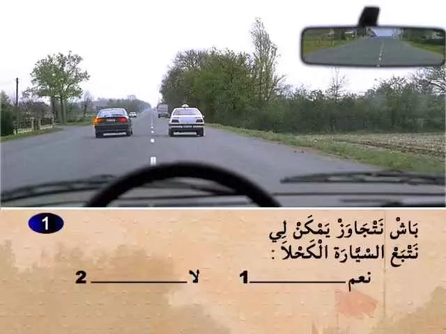
بيّن الجواب
الجواب الصحيح: 2
حنا كنوجدو في طريق وطنية، ما يمكنش نتبعو طوموبيل وهي كتضوبل طوموبيل أخرى ف نفس الوقت، خاصنا نتسناو باش ندوزو.
السؤال 2
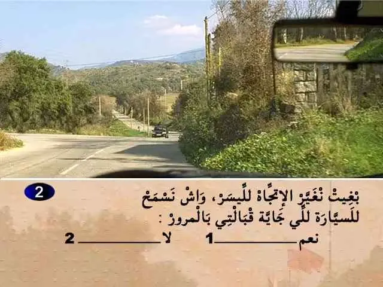
بيّن الجواب
الجواب الصحيح: 1
القاعدة كتقول، باش نقدر نبدل الإتجاه لجهة ليسر خاصني نعطي الأسبقية فالاول للطوموبيل اللي قدامي، و منين تولي الطريق خاوية عاد نقدر نبدل الإتجاه ليسر.
السؤال 3
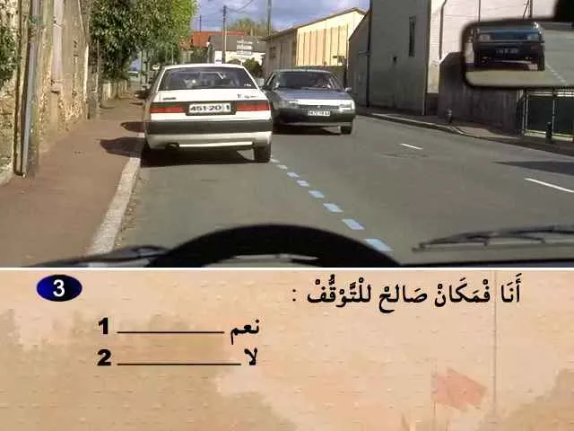
بيّن الجواب
الجواب الصحيح: 2
بما أن الطريق بجوج د الاتجاهات ما عنديش الحق نوقف في جهة ليسر، يمكن لي نوقف غير ف جهة ليمن.
السؤال 4
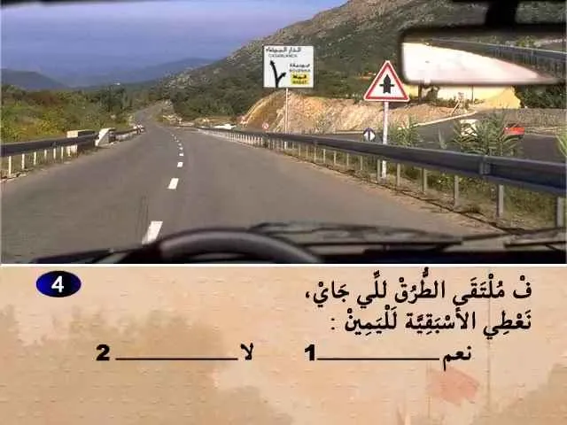
بيّن الجواب
الجواب الصحيح: 2
العلامة فيها أولوية وأنا ف الطريق الكبيرة، الطوموبيلات اللي جايين ف ملتقى الطرق خاصهم يعطيو لي حق الأسبقية ماشي أنا، خاصني غير نرد البال وننقص السرعة ومن بعد نمر بلا ما نعطي الأسبقية.
السؤال 5
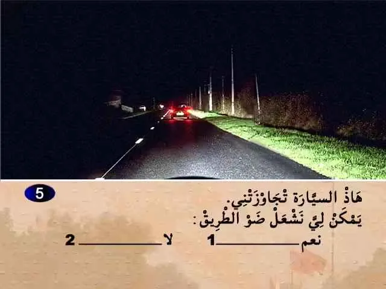
بيّن الجواب
الجواب الصحيح: 2
ما يمكنش نشعل ضو الطريق، حيت ضو الطريق كينور على بعد 100 متر والطوموبيل اللي قدامنا قريبة، استعمال ضو الطريق غايشوش على الشيفور ويمنعو من الرؤية المزيانة ف المرايا.
السؤال 6
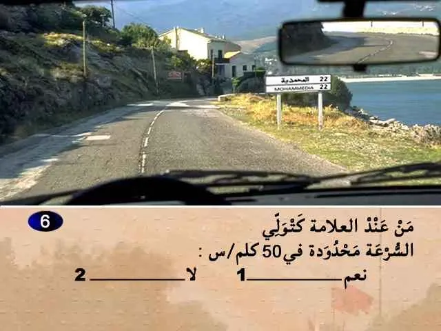
بيّن الجواب
الجواب الصحيح: 2
العلامة كتوضح بللي حنا داخلين لمدينة المحمدية، وما عندهاش علاقة بتحديد السرعة ف 50 كلم ف الساعة حيت يمكن لينا نسوقو بسرعة 60 كلم ف الساعة واحنا داخلين المدينة.
السؤال 7
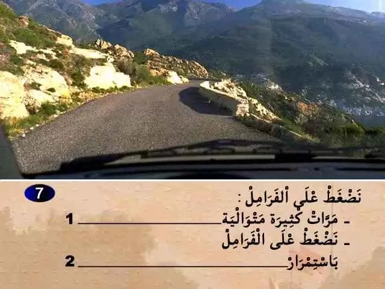
بيّن الجواب
الجواب الصحيح: 1
حنا ف منحدر، إلا ضغطنا على الفرانات بإستمرار فالطوموبيل غادي تسكت، خاصنا نضغطو على الفرانات بزاف المرات ورا بعضياتهم.
السؤال 8
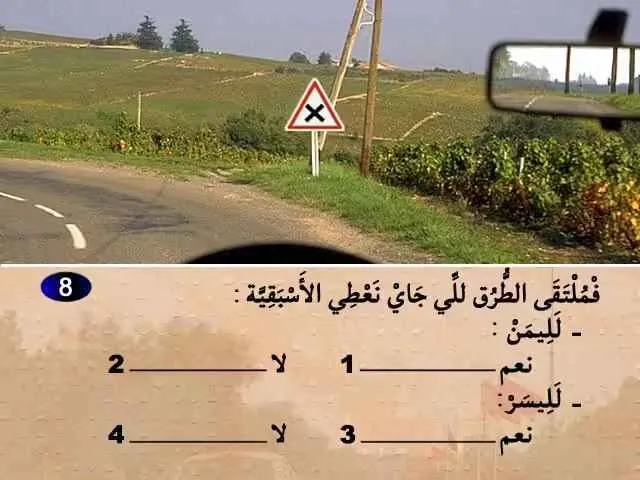
بيّن الجواب
الجواب الصحيح: 1 و 4
العلامة الطرقية كتوضح بللي نعطيو الأسبقية للطوموبيل اللي جاي من ليمن هي اللي تمر، ماشي للطوموبيلات اللي جايين من ليسر.
السؤال 9
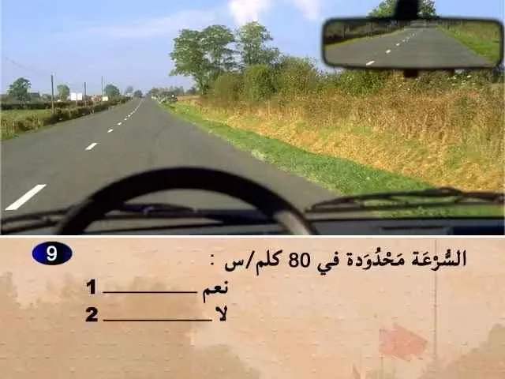
بيّن الجواب
الجواب الصحيح: 2
حنا كنوجدو ف طريق وطنية، السرعة محددة ف 100 كلم ف الساعة ماشي 80 كلم ف الساعة.
السؤال 10
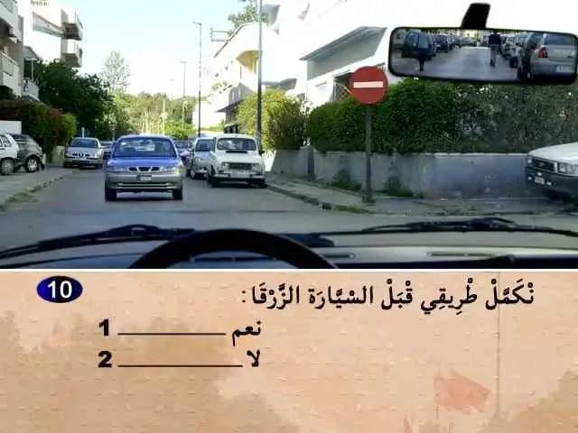
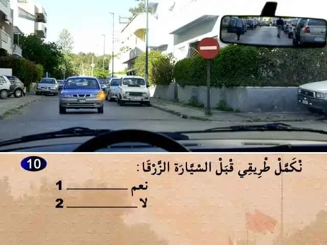
بيّن الجواب
الجواب الصحيح: 1
الأسبقية ف هاد الحالة لنا، حنا ف جهة ليمن بالنسبة للطوموبيل اللي قدامنا، هي خاصها تعطينا الأسبقية ماشي حنا.
السؤال 11
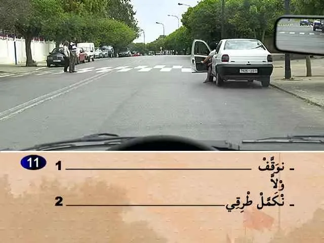
بيّن الجواب
الجواب الصحيح: 1
بما أن الراجلين دخلوا ف الممر ديالهم، خاصني نوقف ونعطيهم حق الأسبقية.
السؤال 12
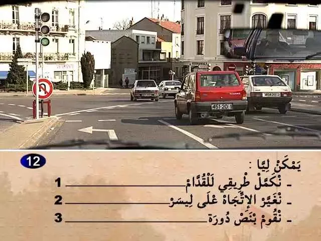
بيّن الجواب
الجواب الصحيح: 2
أنا ف المسلك اللي على ليسر وما يمكنش نبدلو حيت الخط على ليمن متصل. اللافتة اللي قدامي كتقول ممنوع ندير نص دورة، وما نقدرش نكمل للقدام حيت كاين سهم بيض في المسلك كيحتم علي نبدل الاتجاه ليسر.
السؤال 13
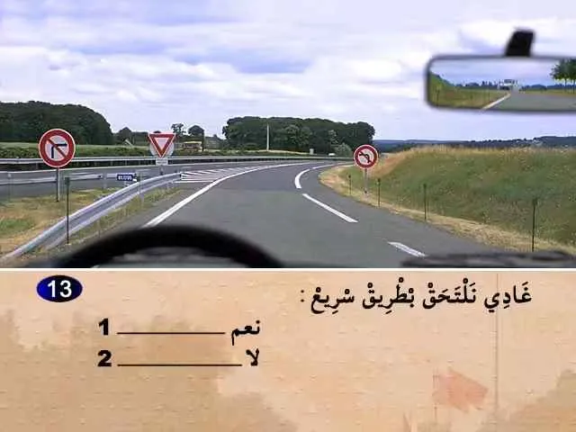
بيّن الجواب
الجواب الصحيح: 1
حنا ف مسلك الاندماج، وغادي ندخلو للطريق السيار.
السؤال 14
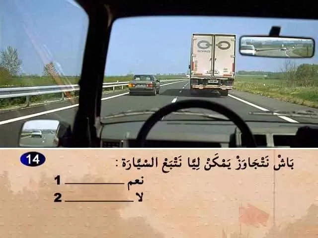
بيّن الجواب
الجواب الصحيح: 2
حنا ف طريق سيار ونقدر نتبع الطوموبيل ف التجاوز ولكن دابا ما نقدرش حيت كاينة طوموبيل جاية من اللور غادي تتجاوز حتى هي، خاصنا نتسناو. ما يمكنش نتجاوز دابا.
السؤال 15
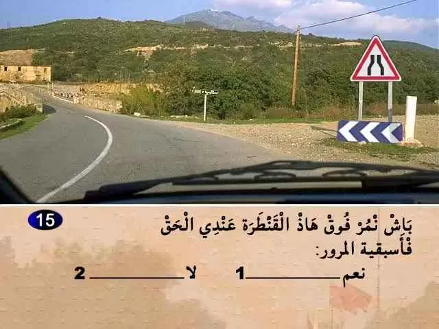
بيّن الجواب
الجواب الصحيح: 2
ف القنطرة ما كاينش شي حد عندو حق الأسبقية، اللول كيدوز. ف هاد الحالة ما عنديش حق الأسبقية.
السؤال 16
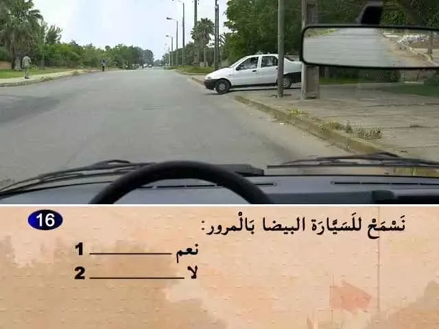
بيّن الجواب
الجواب الصحيح: 2
الطوموبيل البيضا ما كايناش ف طريق باش نعطيها حق الأسبقية.
السؤال 17
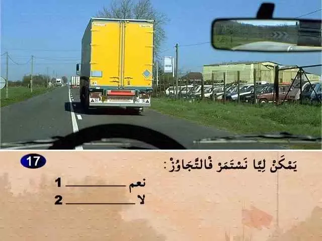
بيّن الجواب
الجواب الصحيح: 1
آه، نقدر نتجاوز حيت عندي خط مقطع ف الجهة ديالي اللي كيسمح لي بالتجاوز.
السؤال 18
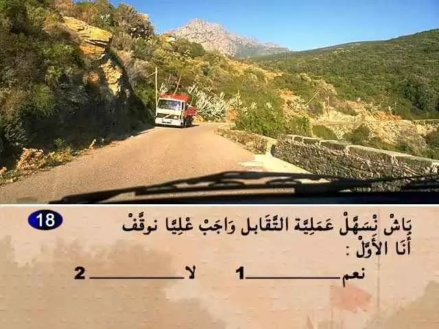
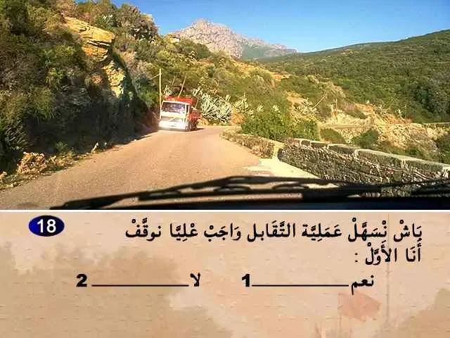
بيّن الجواب
الجواب الصحيح: 1
أي مركبة طالعة وحنا ف منحدر خاص نعطيوها الأسبقية، ف هاد الحالة خاصني نوقف ونخلي الكاميو يدوز هو الأول.
السؤال 19
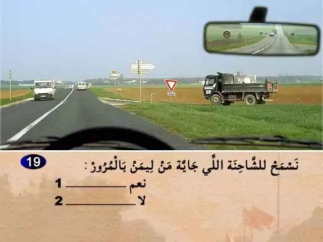
بيّن الجواب
الجواب الصحيح: 2
الكاميو عندو لافتة الطريق صغيرة ف الكبيرة، خاص الكاميو يسمح لينا بالمرور ماشي العكس.
السؤال 20
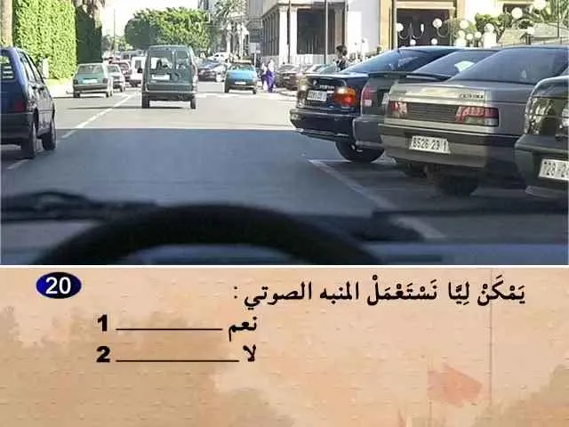
بيّن الجواب
الجواب الصحيح: 1
ف هاد الحالة يمكن نستعمل الكلاكسون حيت صاحب الطوموبيل كيرجع للوراء ويمكن ما شافنيش، خاصني نستعمل الكلاكسون باش نبهه وندوز.
السؤال 21
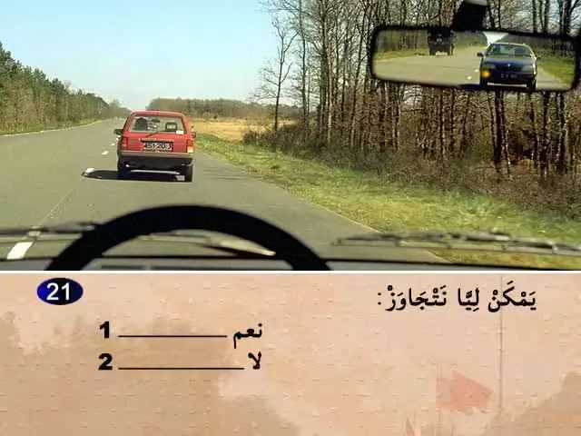
بيّن الجواب
الجواب الصحيح: 2
الطريق كاتسمح لي بالمرور حيت كاين خط مقطع، ولكن ما نقدرش نتجاوز حيت كاينة طوموبيل جاية من اللور كتوجد للتجاوز.
السؤال 22
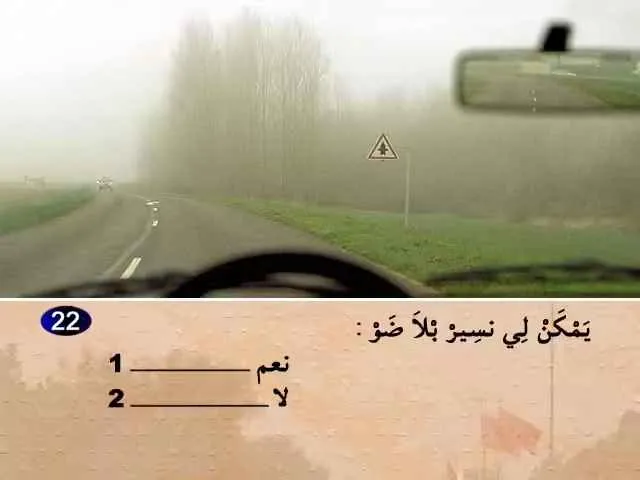
بيّن الجواب
الجواب الصحيح: 2
كاين الضباب، خاص نستعمل أضواء التقابل والأضواء الأمامية والخلفية وما يمكنش نسير بلا أضواء.
السؤال 23
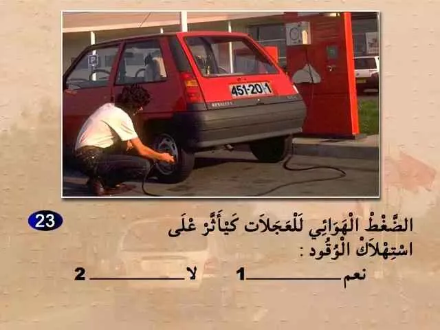
بيّن الجواب
الجواب الصحيح: 1
آه، ضغط الهواء كيأثر على استهلاك الوقود إلا ما كانش ف المستوى العادي.
السؤال 24
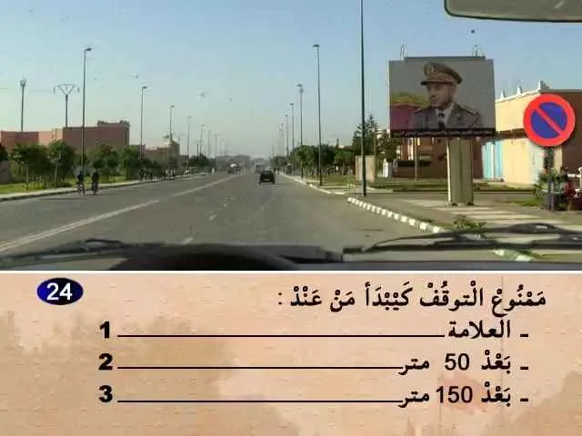
بيّن الجواب
الجواب الصحيح: 1
العلامة الطرقية كتعني المنع، والمنع كيتطبق من عند العلامة.
السؤال 25
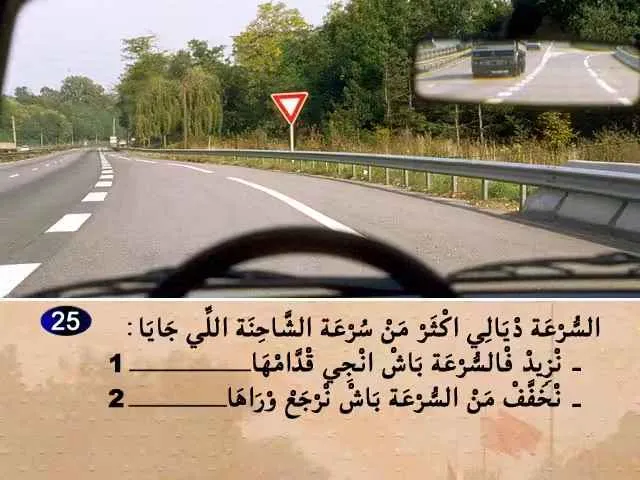
بيّن الجواب
الجواب الصحيح: 1
حنا كنمشي ف طريق سيار، وسرعة الكاميو بطيئة وإذا تسنينا الكاميو غادي نتسناو جميع الطوموبيلات اللي وراها، لذلك خاصنا نزيدو فالسرعة.
السؤال 26
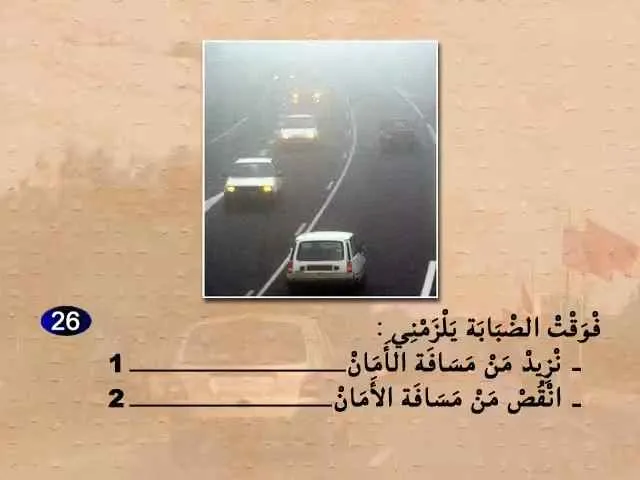
بيّن الجواب
الجواب الصحيح: 1
ف حالة الضباب الرؤية ما كتكونش واضحة بزاف، لذلك خاصنا نزيدو مسافة الأمان ف هاد الحالة.
السؤال 27
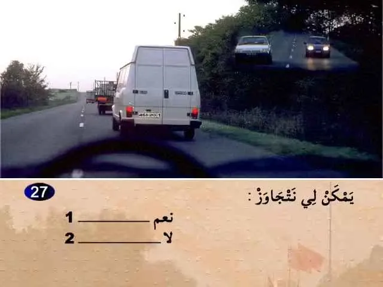
بيّن الجواب
الجواب الصحيح: 2
كاينة طوموبيل جاية من اللور، وحتى كاينين بزاف العربات القدام والمسافة بيناتهم صغيرة، ما يمكنش نتجاوز جميع العربات اللي قدام مرة وحدة حيت كنعرض حياتي للخطر، لذلك خاصني نتسنا للتجاوز.
السؤال 28
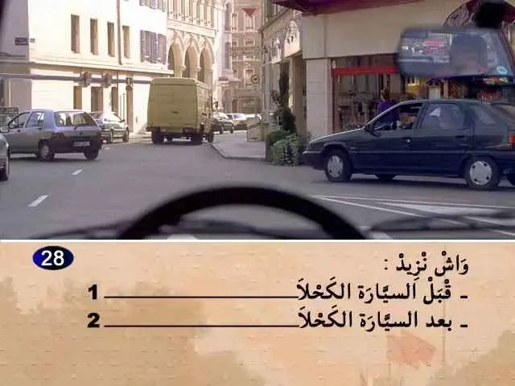
بيّن الجواب
الجواب الصحيح: 2
الأسبقية للعربات الجايين من ليمن، يمكن لي ندوز من بعد الطوموبيل لكحلة.
السؤال 29
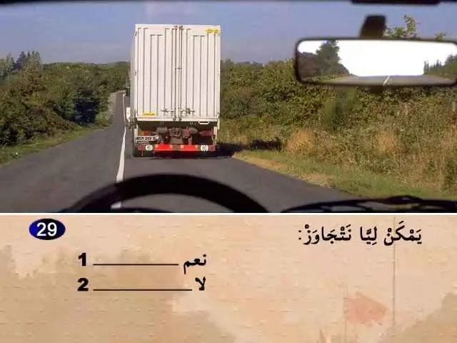
بيّن الجواب
الجواب الصحيح: 2
كاين تشوير أفقي خط متصل، ما يمكنش نتجاوز.
السؤال 30
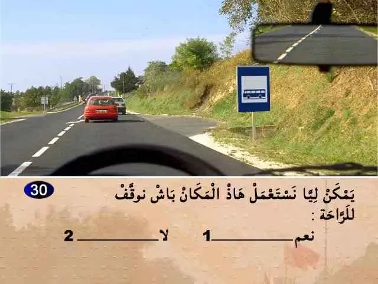
بيّن الجواب
الجواب الصحيح: 2
اللافتة كتعني أن المكان خاص بالكيران، المكان اللي ف جنب الطريق خاص بالكيران ما يمكنش نستعمله للتوقف للراحة.
السؤال 31
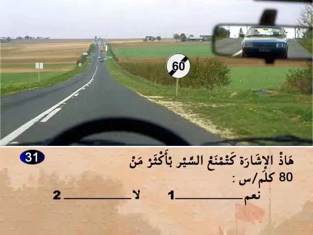
بيّن الجواب
الجواب الصحيح: 2
اللافتة كتعني انتهاء المنع، لذلك يمكن لي نسير حتى سرعة 100 كلم ف الساعة حيت راه طريق وطنية.
السؤال 32
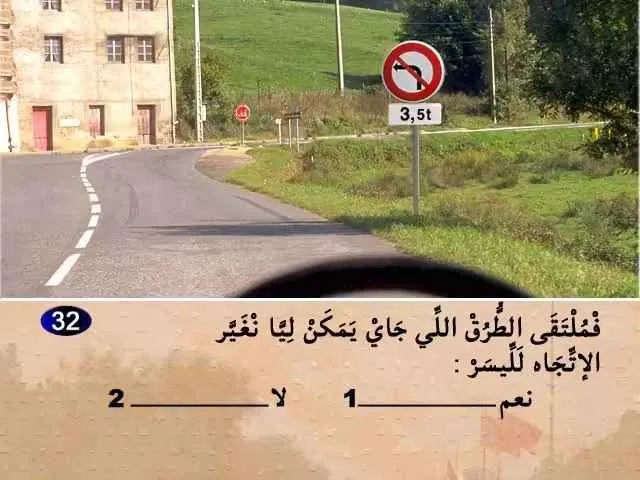
بيّن الجواب
الجواب الصحيح: 1
اللافتة الطرقية كتمنع الكاميوات اللي وزنها كثر من 3.5 طن من تغيير الاتجاه ليسر، بالنسبة لي يمكن لي نبدل الاتجاه ليسر حيت ما عنديش هاد الوزن حيت رخصة السياقة من نوع B والوزن مع الحمولة 3500 كلغ يعني 3.5 طن، والإشارة الطرقية كاتمنع الكاميوات اللي وزنها كثر من 3.5 طن.
السؤال 33
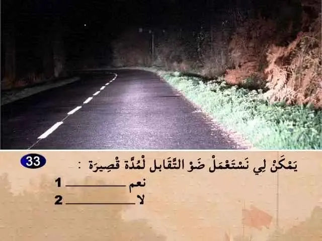
بيّن الجواب
الجواب الصحيح: 1
ف هاد الحالة يمكن نستعمل أضواء التقابل لمدة قصيرة حيت أضواء الطريق غادي تفاجئ الطوموبيل المقابلة ف المنعرج، لذلك من الأفضل نستعمل أضواء التقابل لمدة قصيرة.
السؤال 34
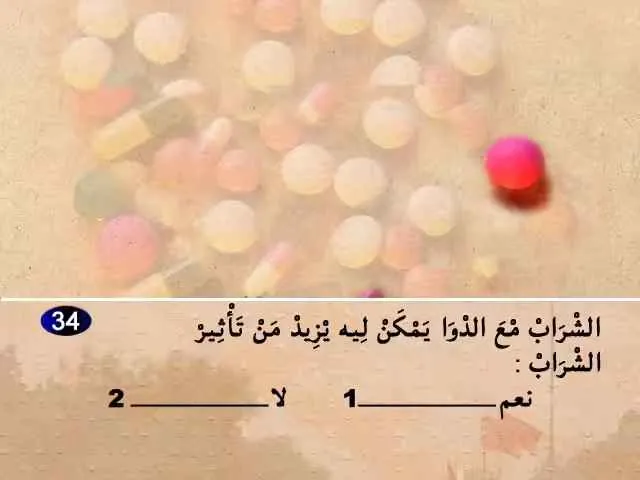
بيّن الجواب
الجواب الصحيح: 1
كاينين بعض الأدوية اللي كيجيبو النعاس، وحتى الشراب كيأثر بزاف على العقل لذلك الشراب مع الدواء كيزيد من تأثير الشراب.
السؤال 35
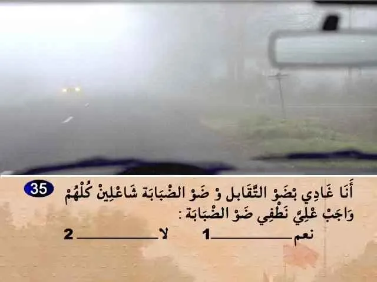
بيّن الجواب
الجواب الصحيح: 2
فحالة الضباب، خاصنا نستعملو ضوء التقابل مع الأضواء القدامية واللّورانية، وفهاد الحالة ما يمكنش نطفيوا ضوء الضباب.
السؤال 36
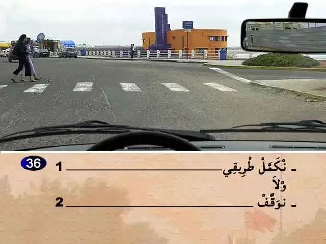
بيّن الجواب
الجواب الصحيح: 2
الناس فممر الراجلين، خاصني نوقف ونتسناهم يدوزو ومن بعد نكمل طريقي.
السؤال 37
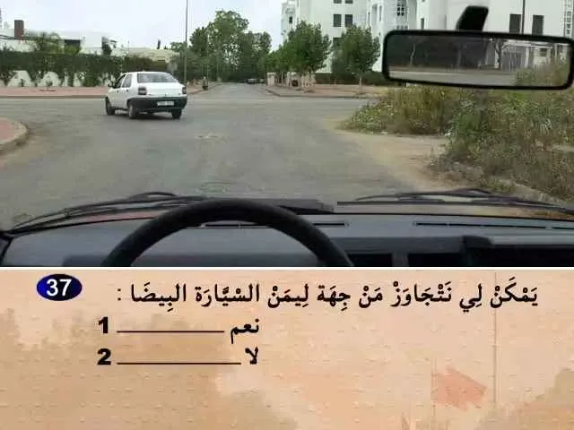
بيّن الجواب
الجواب الصحيح: 1
التجاوز كيدار من الجهة اليسرى ولكن فهاد الحالة الطوموبيل البيضة غادي تبدل الاتجاه لليسار، يعني يمكننا نتجاوزو من الجهة اليمنى.
السؤال 38
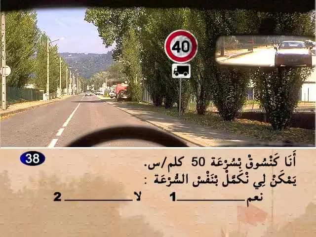
بيّن الجواب
الجواب الصحيح: 1
اللافتة خاصة بالكاميوات وما يمكنش يسيروا بأكثر من 40 كلم فالساعة، بالنسبة ليا يمكنني نسير ب50 كلم فالساعة ما كاينش مشكل.
السؤال 39
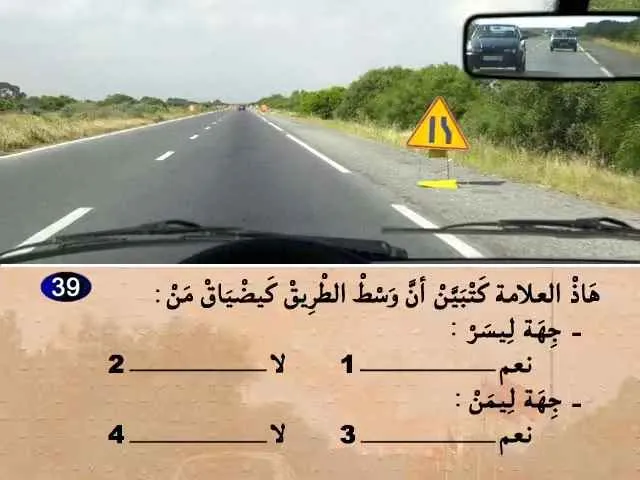
بيّن الجواب
الجواب الصحيح: 2 و 3
اللافتة فيها جوج خطوط، الخط لي فالجهة اليسرى كيبين الطريق من الجهة اليسرى وهو مستقيم يعني الطريق ما كاتضيقش من الجهة اليسرى، ولكن الخط لي فالجهة اليمنى ماشي مستقيم يعني الطريق كاتضيق من الجهة اليمنى.
السؤال 40
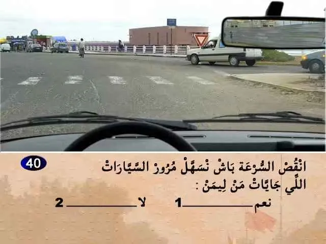
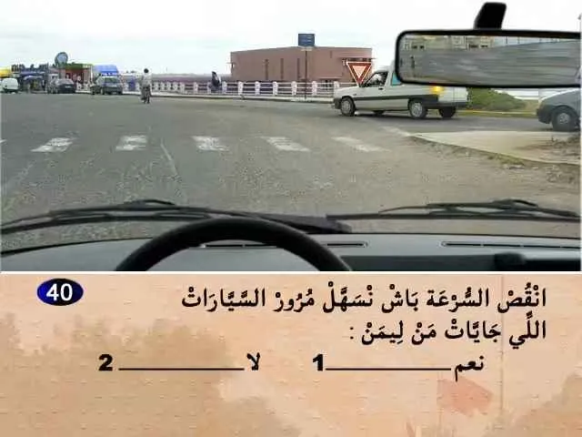
بيّن الجواب
الجواب الصحيح: 2
الطوموبيلات لي فالجهة اليمنى عندهم لافتة الطريق الصغيرة فالكبيرة، خاصهم يسمحوا ليا ندوز اللول. ما خاصنيش ننقص من السرعة ونسد ليهم الطريق.